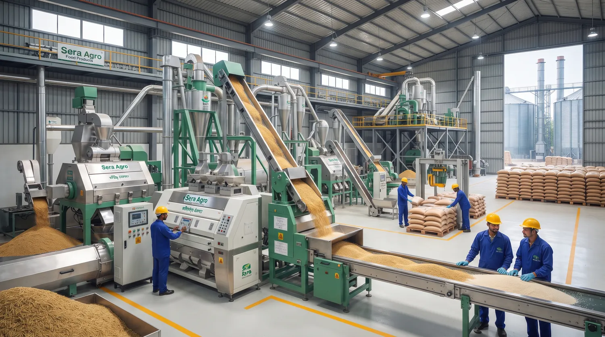
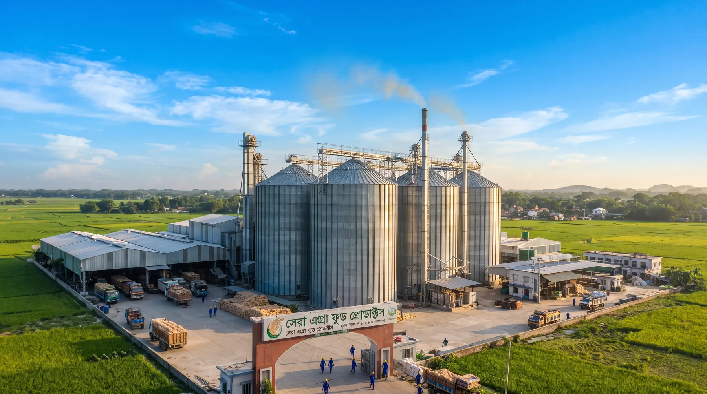
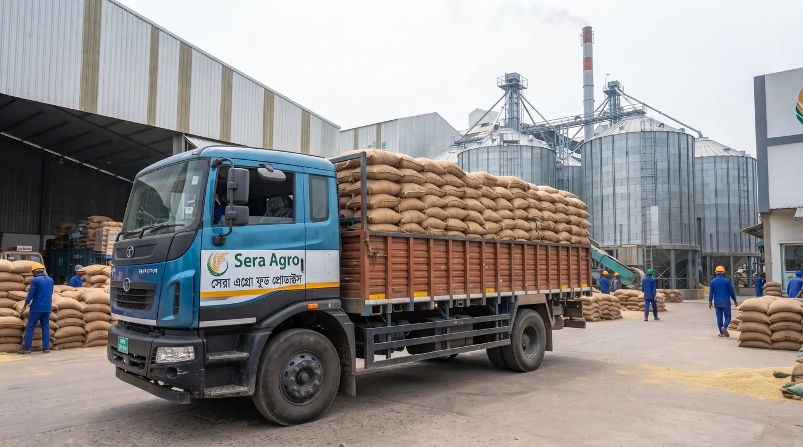

মিল ও উৎপাদন
সাইলো, আধুনিক মেশিন আর পরিচ্ছন্ন প্যাকেজিং লাইন: একনজরে আমাদের কাজের জায়গা।



ধান থেকে থালা পর্যন্ত
মাঠ থেকে আপনার রান্নাঘর পর্যন্ত চাল যে পাঁচ ধাপ পার হয়:
ধান সংগ্রহ
মৌসুমে বাছাই করা ধান সংগ্রহ করা হয়।
শুকানো ও পরিষ্কার
আর্দ্রতা ঠিক রেখে ধান শুকানো হয়, ময়লা আলাদা করা হয়।
মিলিং
ধানের খোসা ছাড়িয়ে চাল তৈরি করা হয়।
বাছাই
ভাঙা ও অসম দানা আলাদা করে সমান মানের চাল রাখা হয়।
প্যাকেজিং
পরিষ্কার ২৫ কেজির প্যাকেটে ভরে গোডাউন ও বাজারে পাঠানো হয়।